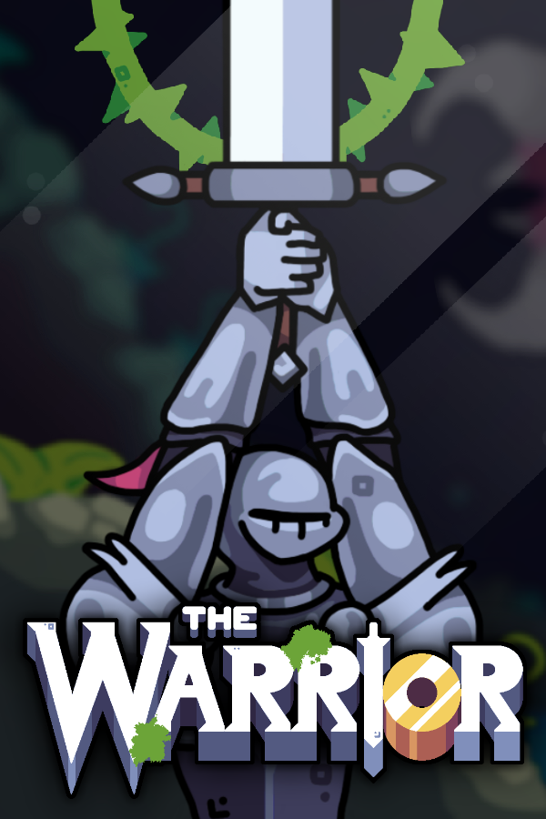

THE WARRIOR

A unique platforming experience where the protagonist, story, and mechanics are constantly changing. Take control of legendary warriors, giant worms, greedy kings, and lazy demons, each with their own purpose.
>>> Steam <<<
Itch.io
About
I'm a solo indie developer living in Brazil and making games with friends since 2017.
ThornDuck's mission is to build crazy little worlds that we love and care for, and to share unique experiences with you!